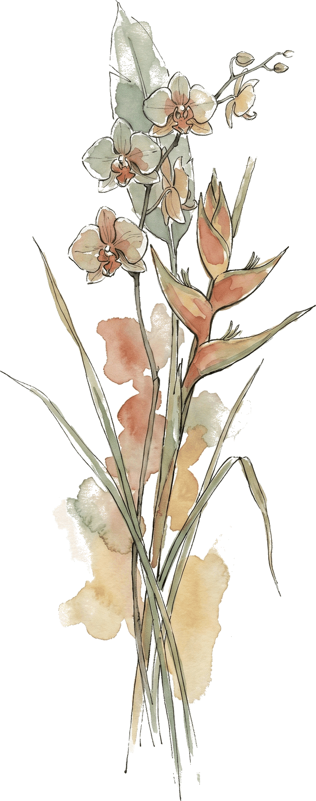

Sketsa Perjalanan / Eksplorasi Budaya / Jawa Tengah
Geser sudut halaman untuk membalik · Tarik kaca pembesar untuk melihat detail
Catatan Perjalanan · Pelat 01
Candi Borobudur
Magelang, Jawa Tengah · Warisan Dunia UNESCO Dinasti Syailendra
Didirikan pada abad ke-8 hingga ke-9 Masehi oleh Dinasti Syailendra, Candi Borobudur merupakan monumen Buddha terbesar di dunia yang memadukan arsitektur stupa dengan konsep mandala alam semesta. Terdiri dari sembilan teras berundak (enam bujur sangkar dan tiga lingkaran) yang melambangkan tingkatan spiritual Kamadhatu, Rupadhatu, dan Arupadhatu. Dindingnya dihiasi 2.672 panel relief naratif yang menceritakan Lalitavistara, Jataka, dan Gandavyuha, dipahat dari batu andesit vulkanik lembah Progo. Kehadirannya diapit Gunung Merapi, Merbabu, Sumbing, dan perbukitan Menoreh menjadikannya pusat peradaban spiritual Jawa Kuno yang telah diakui sebagai Warisan Dunia UNESCO.
Figur & Sejarah Terkait
Mpu Gunadharma
Arsitek Agung Dinasti Syailendra (Abad ke-8 Masehi)
Tokoh arsitek legendaris Dinasti Syailendra yang merancang keagungan Candi Borobudur dengan perhitungan mandala kosmos Buddhis yang presisi. Menurut tradisi tutur masyarakat Magelang, siluet jajaran Pegunungan Menoreh di kejauhan menyerupai sosok Gunadharma yang tengah beristirahat memandangi mahakaryanya.
Daftar Destinasi Jawa Tengah